DEMO COURSE WEBSITE
Biological & Physical Oceanography
Advanced topics from phytoplankton to fisheries, with emphasis on physical processes and their ecological implications.
Week 13 · Lecture
Phytoplankton Identification and Domoic Acid Monitoring
Simplified Week 13: reference image, field guide, and Santa Cruz Wharf domoic acid timeseries.
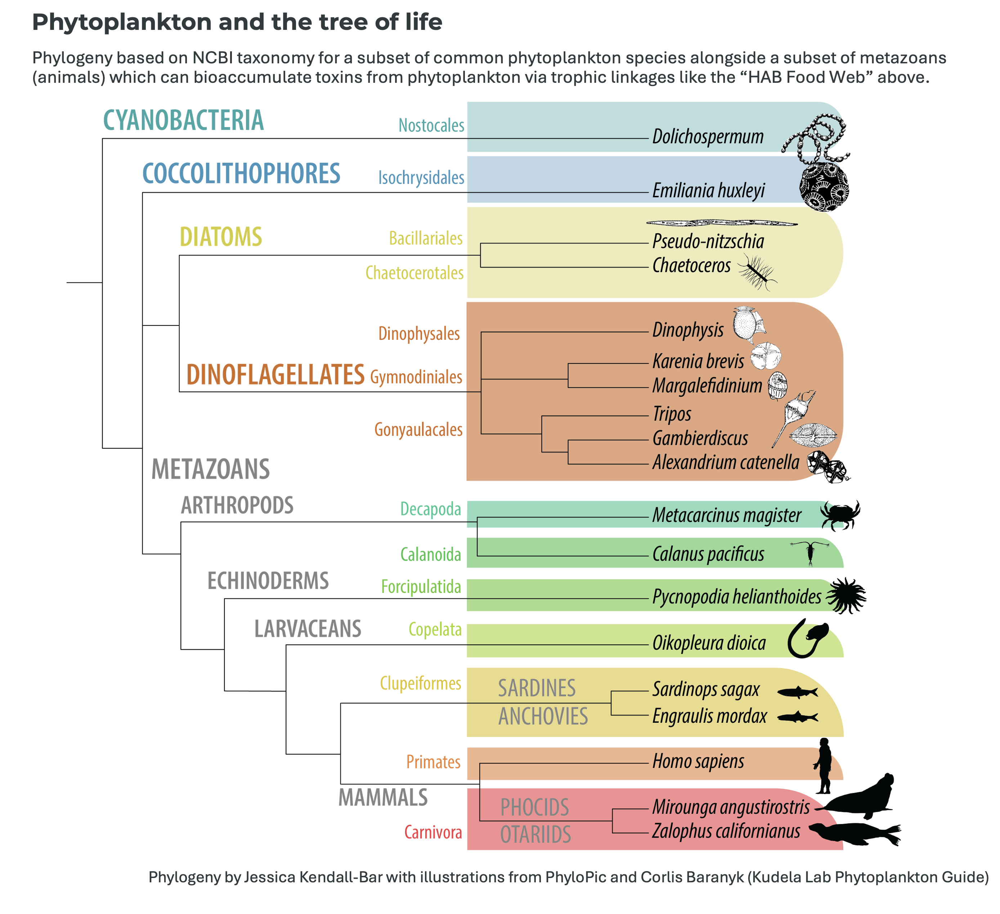
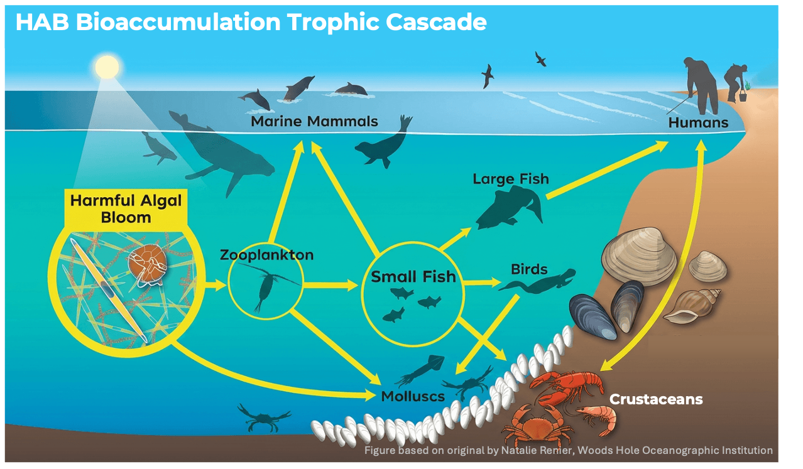
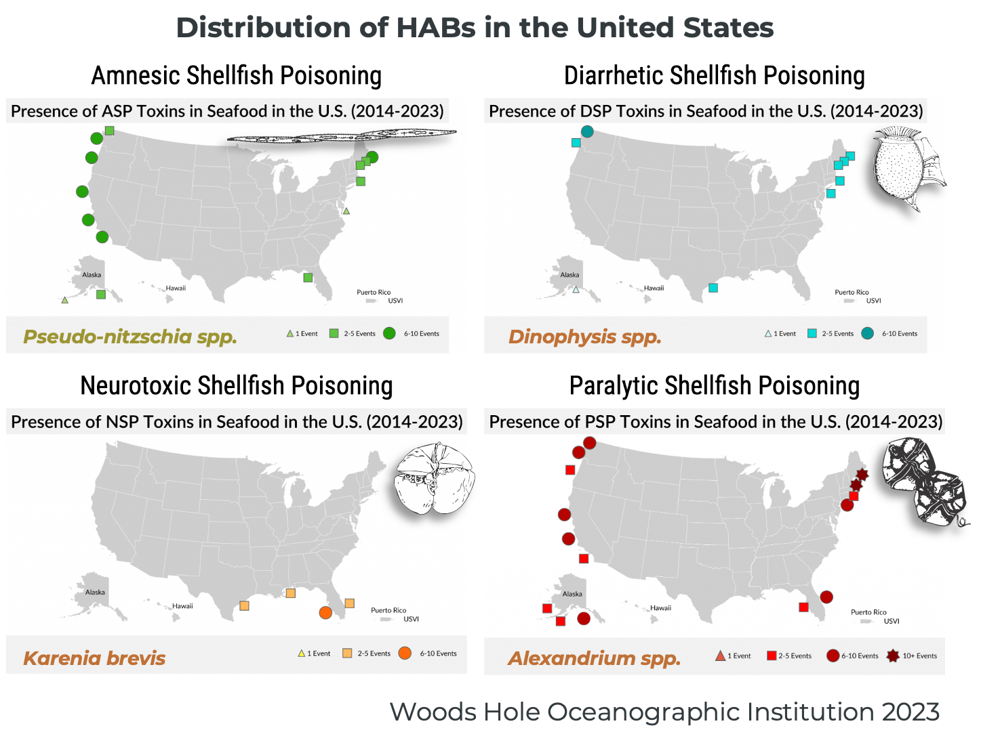
For each species below, observe the illustration and microscope image, then identify the phytoplankton group and key morphological features.
Cyanobacteria
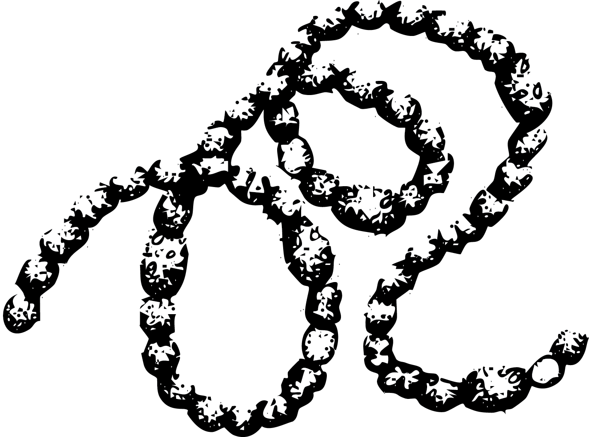
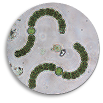
Dolichospermum spp.
Filamentous chains; cylindrical/barrel cells; heterocysts for N₂ fixation; freshwater cyanotoxins
Coccolithophore


Emiliania huxleyi
Spherical; calcium carbonate coccolith plates; no HAB; abundant in CCE
Diatom
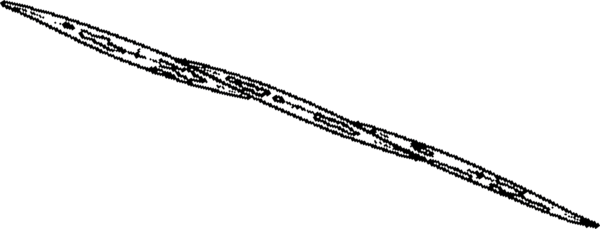
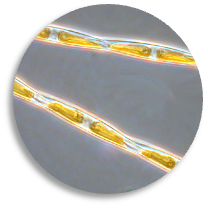
Pseudo-nitzschia spp.
Elongate fusiform; silica frustule; chains; ~½ species produce domoic acid (ASP)
Diatom
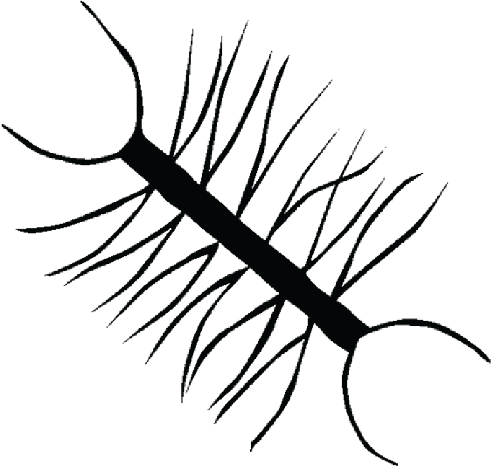
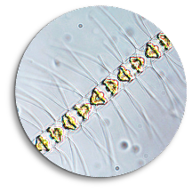
Chaetoceros spp.
Rectangular cells; long corner setae; coiled/curved chains; no HAB; abundant in CCE
Dinoflagellate
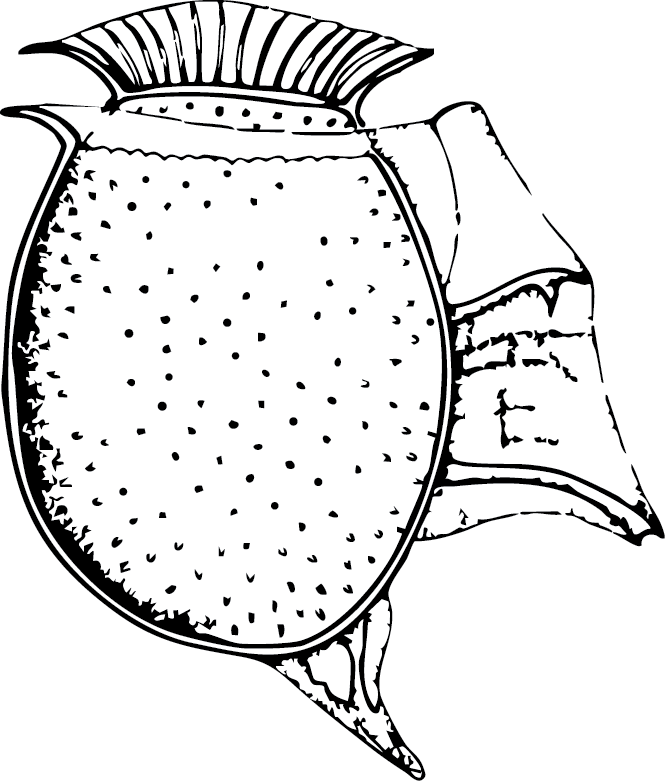
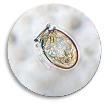
Dinophysis spp.
Armored; laterally flattened; large hypotheca (~¾); girdle lists; okadaic acid (DSP)
Dinoflagellate


Karenia brevis
Unarmored; apical groove; dorsoventrally flattened; brevetoxins (NSP); Florida red tide
Dinoflagellate
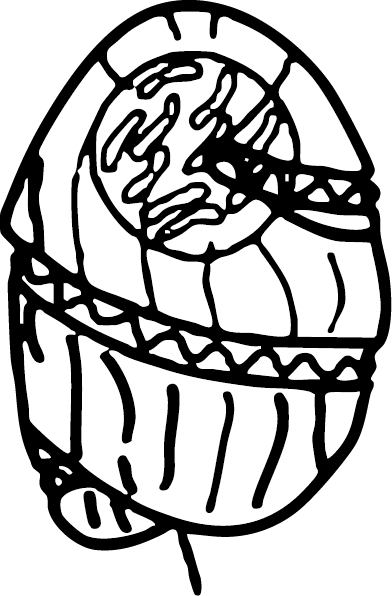
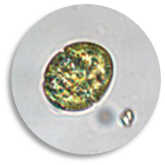
Margalefidinium spp.
Unarmored; cingulum rotates >1.5×; reactive oxygen species; fish kills / brown tide
Dinoflagellate


Tripos spp.
Heavily thecate; 1–4 apical/antapical horns; no HAB; common in CCE
Dinoflagellate
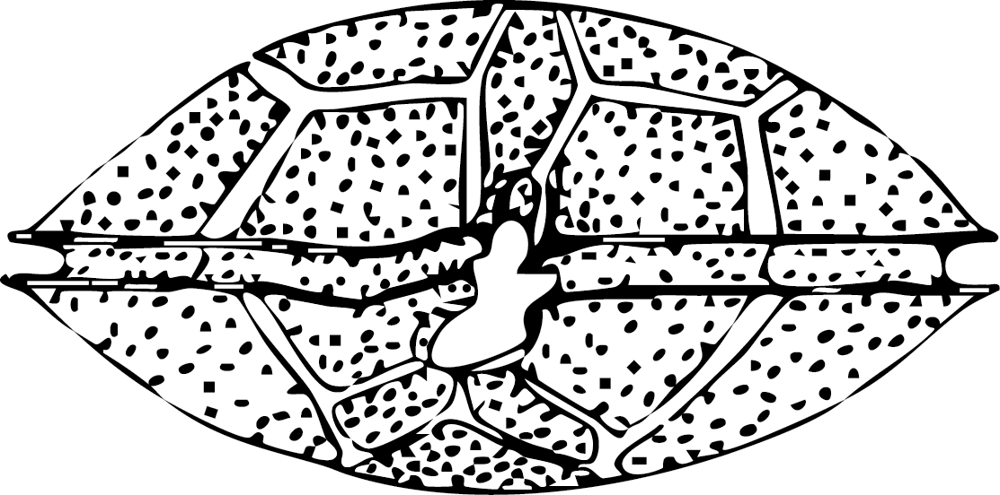
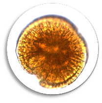
Gambierdiscus spp.
Lens-shaped; anterio-posteriorly compressed; thecate; ciguatoxins (CFP); tropical reefs
Dinoflagellate


Alexandrium catenella
Armored; spherical; chains; saxitoxins (PSP); abundant in CCE
Click any species card to see full field guide details.
Space reserved for the video card gallery you want to add at the bottom.